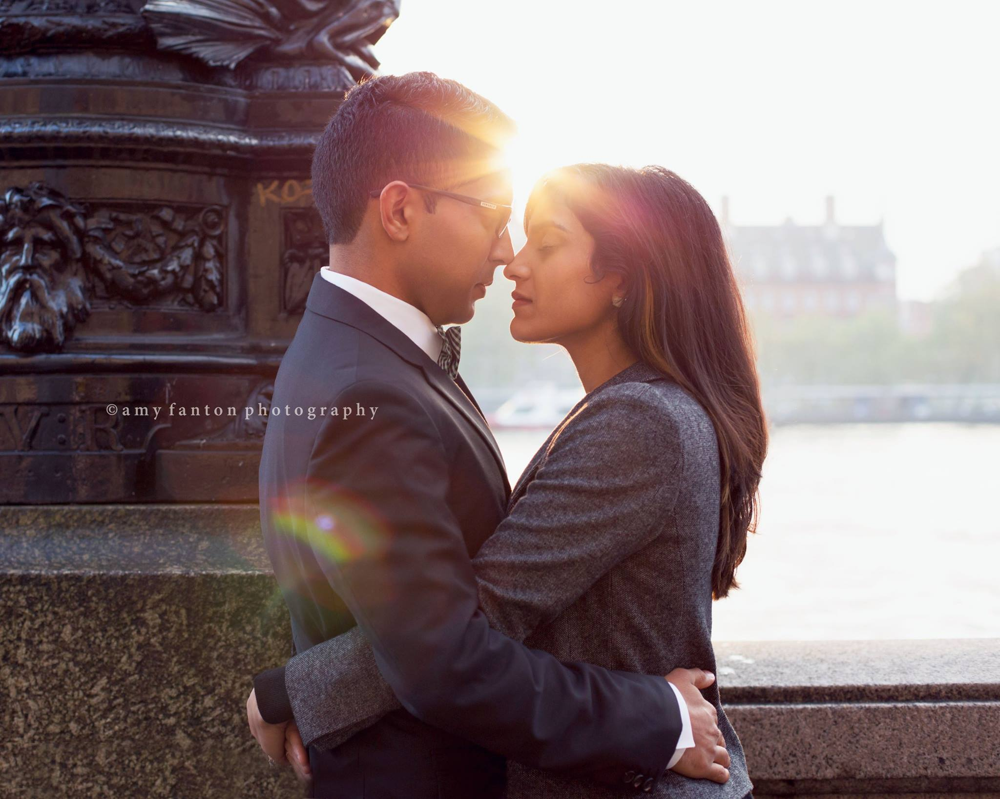
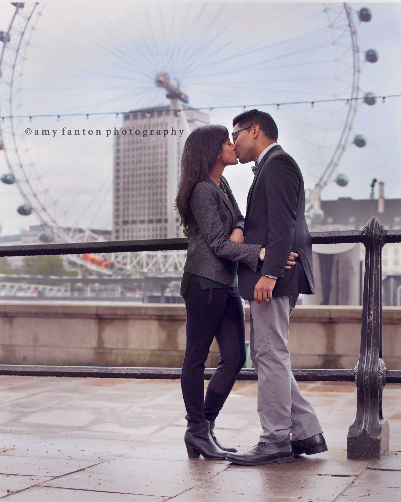

Engagements
Goodbye London Couple's Photo Shoot
17 February 2015

These two contacted me to do a couple’s photo shoot during their last weeks here in London before making a big move across the pond to New York City. They wanted to create images that not only captured the love in their relationship, but also that showcased the city they have called home and fallen in love with for the last seven years.
We spent our time during the photo session visiting some of their favorite classic London sites along the Thames river, crossing over one of London’s most iconic bridges and stopping into a nearby garden to add a bit of variety to the scenery. It happened to be bitter cold on the day of shooting and the light was a bit harsh (we scheduled to shoot mid-day and we got a shockingly clear sunny day), but we pushed through and got tons of great stuff.
These two were such wonderful sports and they even help me discover some new locations I had never used. I so wish these two were sticking around in London as I could totally see us becoming bffs, but I know we will be in touch in the future. Good luck you guys and I hope New York City is as good to you as London has been!
